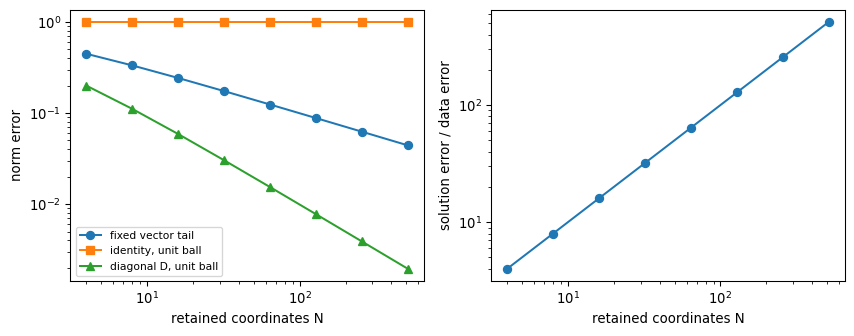
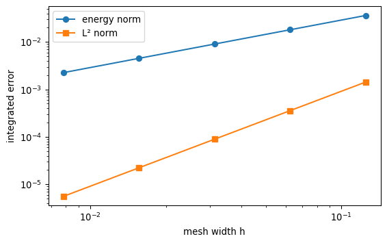
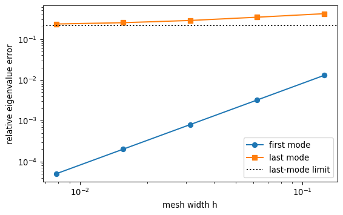

23Module F1 — Functional Analysis: Infinite-Dimensional Geometry and Operator Theory
A matrix can be injective and still amplify errors enormously when inverted. Now imagine a sequence of unit input directions whose outputs tend to zero. Each direction remains distinguishable in exact arithmetic, yet no single stability constant controls inversion. In an infinite-dimensional space a single operator can exhibit this behavior. Understanding how it happens will take us from linear algebra to inverse problems, and ultimately to the numerical spectrum of a differential equation.
Starting point. Review II, §4.16 connects kernels, quotients and uniqueness. Section 5.11.3 interprets a load as a functional on test functions. Module C supplies the geometry of representing vectors and adjoints. Sections 7.11.5–6 arrive at the stiffness–mass eigenproblem. Here we recover those constructions with precise hypotheses on the underlying function spaces. F1 and F2 are parallel extensions of the core modules. The numerical connections to Module E can be read along the way.
Conventions. Scalars are real or complex. As in Module C, \(\langle x,y\rangle\) is linear in \(x\). Functionals in \(X^*\) are linear. Write \(T'\) for the continuous dual map (Module B’s pullback) and \(T^*\) for the Hilbert adjoint. Sessions 6–8 use real spaces for the PDE examples.
23.1 Session 1 — What is a limit of vectors?
Distance adds structure to a vector space
A norm assigns \(x\) a length \(\|x\|\ge0\), zero exactly at \(0\), with \(\|cx\|=|c|\|x\|\) and \(\|x+y\|\le\|x\|+\|y\|\). Translation now preserves distance \(d(x,y)=\|x-y\|\). The open ball \(B(x,r)\) consists of points at distance less than \(r\). A set is open if each of its points belongs to a ball contained in the set. These open sets form the norm topology. The reverse triangle inequality \(|\|x\|-\|y\||\le\|x-y\|\) follows by bounding each norm in terms of the other.
A sequence converges to \(x\) if eventually every term lies in every prescribed ball about \(x\). It is Cauchy if for every \(\varepsilon>0\), all pairs of sufficiently late terms have distance less than \(\varepsilon\). Convergence implies Cauchy by inserting the limit into the triangle inequality. Completeness is the converse for every Cauchy sequence in the space. A complete normed space is a Banach space.
The closure \(\overline M\) consists of limits in the ambient space of sequences from \(M\). Equivalently every ball about such a point meets \(M\) (choose radii \(1/n\)). A closed set contains all its limit points. A dense set has closure equal to the whole space. A map \(S\) is continuous at \(x\) if for each output tolerance \(\varepsilon>0\) some input radius \(\delta>0\) ensures \(d(Sz,Sx)<\varepsilon\) whenever \(d(z,x)<\delta\). Equivalently, \(x_n\to x\) implies \(Sx_n\to Sx\); failure of the radius condition gives a counterexample sequence by choosing \(\delta=1/n\).
Why the choice of norm used to be harmless
Two norms are equivalent if \(c\|x\|_a\le\|x\|_b\le C\|x\|_a\) for positive constants independent of \(x\). Both identity maps are continuous and the two notions of Cauchy sequence agree.
Finite-dimensional norm equivalence. Choose a basis and write \(x=\sum x_jb_j\). For any norm \(N\), Cauchy–Schwarz in the coordinates gives \(N(x)\le(\sum N(b_j)^2)^{1/2}|x|_2\). The reverse triangle inequality now makes \(N\) continuous in Euclidean coordinates. On the compact Euclidean unit sphere it attains a strictly positive minimum \(m\). Scaling gives \(m|x|_2\le N(x)\). Comparing each of two norms with \(|\cdot|_2\) proves the theorem. Coordinatewise completeness of \(\mathbb R\) or \(\mathbb C\) then gives completeness in every such norm. Every finite-dimensional subspace of any normed space is closed: a convergent sequence in it is Cauchy there, has an internal limit, and limits are unique. The compact sphere was the decisive ingredient.
A dictionary of spaces
Space
Elements and norm
Meaning of small error
\(\ell^p\), \(1\le p<\infty\)
Sequences with \(\|x\|_p=(\sum_{j\ge1}|x_j|^p)^{1/p}<\infty\)
Small aggregate error over all coordinates
\(\ell^\infty\)
Bounded sequences, \(\|x\|_\infty=\sup_j|x_j|\)
Every coordinate accurate to the same tolerance
\(C[a,b]\)
Continuous functions, \(\|u\|_\infty=\max|u|\)
Uniform control, including endpoints
\(L^p(a,b)\), \(1\le p<\infty\)
Measurable functions modulo equality almost everywhere, \(\|u\|_p=(\int_a^b|u|^p)^{1/p}\)
Here length extends to a measure of sets. A null set can be covered by intervals with arbitrarily small total length. “Almost everywhere” permits exceptions on a null set. Measurability ensures that level sets can be measured and the Lebesgue integral defined; it agrees with the usual integral for continuous functions. Changing a function at a single point leaves its integral unchanged. Passing to equivalence classes makes the integral expression a genuine norm. For \(1<p<\infty\) the triangle inequality for these norms is Minkowski’s inequality. The table lists Banach spaces. Completeness of general \(L^p\) uses integration theory (the Riesz–Fischer completeness theorem); the following sequence-space argument gives its essential mechanism without measure theory.
Proof for \(\ell^p\), \(p<\infty\). If \(x^{(k)}\) is Cauchy, each coordinate is Cauchy since \(|x_j^{(k)}-x_j^{(l)}|\le\|x^{(k)}-x^{(l)}\|_p\). Call its limit \(x_j\). For \(k,l\) sufficiently large, the sum of the first \(m\) difference powers is at most \(\varepsilon^p\). First send \(l\to\infty\) in that finite sum, then \(m\to\infty\). Thus \(\|x-x^{(k)}\|_p\le\varepsilon\), and \(x\in\ell^p\) by addition. For the sup norm take the coordinate limit in the bound for each coordinate and then the supremum. The same uniform Cauchy argument works in \(C[a,b]\) because uniform limits preserve continuity: approximate the limit uniformly to \(\varepsilon/3\) by one continuous function and use its continuity for the middle term.
Three convergence tests. On \([0,1]\), \(x^n\) converges pointwise to zero except at \(1\), where it remains one. Its \(L^2\) norm is \((2n+1)^{-1/2}\), whereas its uniform norm stays one. Pointwise asks about each fixed point, uniform uses a single index for every point, and norm convergence depends on the specified norm. For pointwise convergence everywhere to zero without uniform convergence, take the triangular hat supported on \([0,2/n]\) of height one at \(1/n\). Conversely, growing the height of that hat to \(\sqrt n\) keeps its squared integral \(2/3\) while it still tends to zero pointwise. In \(L^2\) even the phrase “value at \(x\)” requires a choice of representative.
Completing an unfinished space
Let \(c_{00}\) consist of finite-support sequences with the \(\ell^2\) norm. Truncate \(x=(1,1/2,1/3,\dots)\) at index \(N\). The truncations are Cauchy by convergence of \(\sum j^{-2}\), but their only possible coordinatewise limit has infinite support. Every \(\ell^2\) sequence is approximated by its truncations, so the completion of \(c_{00}\) is \(\ell^2\).
In general, take Cauchy sequences modulo \((x_n)\sim(y_n)\) when \(\|x_n-y_n\|\to0\). Coordinatewise operations and \(\|[(x_n)]\|=\lim\|x_n\|\) are well defined by the triangle inequality. Constant sequences embed \(X\) isometrically and densely: the constants \(x_k\) approach \([(x_n)]\) as \(k\to\infty\). For a Cauchy sequence of classes \(z_k\), choose \(y_k\in X\) within \(1/k\) of \(z_k\). Then \((y_k)\) is Cauchy and its class is the limit of \(z_k\). This proves completeness.
Universal property. For any bounded linear \(T:X\to Y\) with \(Y\) Banach there is a unique bounded linear extension to the completion, given by \([(x_n)]\mapsto\lim Tx_n\). Boundedness makes the images Cauchy and equivalent representatives have equal limits. Density forces uniqueness and preserves the norm. This determines the completion up to a unique isometry fixing \(X\). The coordinates used in an example are optional; the extension property identifies the construction.
Checkpoint. Find the precise step in the norm-equivalence proof that fails on \(\ell^2\). The unit vectors \(e_j\) have pairwise distance \(\sqrt2\), so the unit sphere contains a sequence with no convergent subsequence.
23.2 Session 2 — Which measurements survive approximation?
A global bound from continuity at one point
For a linear \(T:X\to Y\), the following are equivalent: continuity, continuity at zero, and existence of \(C<\infty\) with \(\|Tx\|\le C\|x\|\) for all \(x\). Indeed, continuity at zero supplies \(\delta>0\) such that \(\|z\|<\delta\) gives \(\|Tz\|<1\). Apply this to \(z=\delta x/(2\|x\|)\) for \(x\ne0\). Conversely a bound gives \(\|Tx-Ty\|\le C\|x-y\|\), hence continuity everywhere. The least possible bound is \[\|T\|=\sup_{\|x\|\le1}\|Tx\|.\] The supremum need not be attained. The diagonal map \(e_j\mapsto(1-1/j)e_j\) on \(\ell^2\) has norm one; every individual unit vector has strictly smaller image norm.
Write \(\mathcal L(X,Y)\) for the bounded linear maps. Norm submultiplicativity \(\|ST\|\le\|S\|\|T\|\) follows by applying the two bounds successively. If \(Y\) is Banach, \(\mathcal L(X,Y)\) is Banach even when \(X\) is incomplete. Indeed a norm-Cauchy sequence \(T_n\) has pointwise limits \(Tx=\lim T_nx\), linear by the limit laws. For large \(n,m\), \(\|(T_n-T_m)x\|\le\varepsilon\|x\|\). Passing \(m\) to infinity shows both boundedness of \(T\) and norm convergence. In particular \(X^*=\mathcal L(X,\mathbb F)\) is always Banach.
Two notions of duality
The algebraic dual contains every linear functional. A continuous functional permits reliable passage from approximate inputs to measured outputs. On \(C[0,1]\) with the sup norm, \(\delta_t(u)=u(t)\) has norm one, as seen from the constant function. With the \(L^2\) norm on the same continuous functions, shrinking triangular hats centered at \(t\) give arbitrarily small inputs with output one. Evaluation is now discontinuous. Its formula cannot even be defined on all \(L^2\) classes by choosing an arbitrary representative. On \(c_{00}\) the sum \(s(x)=\sum_j x_j\) is algebraically legitimate, but a vector with its first \(N\) entries \(1/\sqrt N\) has unit norm and \(s(x)=\sqrt N\).
For bounded \(T:X\to Y\), \(T'g=g\circ T\) pulls continuous measurements back from \(Y\) to \(X\). It satisfies \((ST)'=T'S'\) and \(\|T'\|\le\|T\|\). Its definition uses only composition. An adjoint acting on vectors requires something further in Session 4.
Hahn–Banach. Every bounded linear functional \(f\) on a subspace \(M\) of a real or complex normed space extends to the whole space with exactly the same norm. Neither closedness of \(M\) nor completeness of \(X\) is required.
Proof outline with the extension step. Over \(\mathbb R\), set \(p(x)=\|f\|\|x\|\). To assign the value \(c\) at one new vector \(z\), domination by \(p\) requires \[\sup_{m\in M}\{f(m)-p(m-z)\}\le c\le
\inf_{n\in M}\{p(n+z)-f(n)\}.\] Every lower candidate is below every upper candidate because \(f(m+n)\le p(m+n)\le p(m-z)+p(n+z)\). Choose a \(c\) in the interval. Scaling separately for positive and negative coefficients proves \(f(m)+tc\le p(m+tz)\); applying this to the negative vector gives the absolute bound. Order all dominated extensions by inclusion. A chain has an upper bound by taking its union. Zorn’s lemma (a choice principle) yields a maximal extension; the one-vector step forces its domain to be \(X\). In the complex case extend \(g=\operatorname{Re}f\) over the underlying real space and set \(F(x)=g(x)-i g(ix)\) using the extended \(g\). This is complex linear and extends \(f\). Rotate \(x\) by a scalar of modulus one so \(F\) is real and nonnegative there; the real bound gives \(|F(x)|\le\|f\|\|x\|\).
For \(x\ne0\) prescribe \(f(cx)=c\|x\|\) on its line. Extension gives \(\|f\|=1\) and \(f(x)=\|x\|\). Consequently \(\|x\|=\sup_{\|f\|\le1}|f(x)|\). Applying this at each \(Tx\) proves \(\|T'\|=\|T\|\). The canonical evaluation map \(J:X\to X^{**}\), \(Jx(f)=f(x)\), is therefore isometric. Surjectivity is a separate property called reflexivity. Hilbert spaces have it by Riesz representation. The norming functional and the extension can depend on choices; the map \(J\) does not.
Quotients and annihilators revisited
For a linear subspace \(M\), set \(\|x+M\|=\inf_{m\in M}\|x-m\|\). Changing representatives leaves the infimum unchanged. Scaling and adding near-minimizers proves homogeneity and the triangle inequality. The null classes correspond precisely to \(x\in\overline M\), so one gets a norm precisely when \(M\) is closed. If \(X\) is Banach and \(M\) closed the quotient is Banach: from a Cauchy sequence of classes select a subsequence with successive quotient distances below \(2^{-k}\). Lift each difference to a representative of norm below \(2^{1-k}\). The lifted increments sum in \(X\) by completeness, giving a limit class for the subsequence and hence the whole sequence.
Every bounded \(T\) vanishing on \(M\) factors uniquely through the quotient by \([x]\mapsto Tx\). Indeed \(\|Tx\|\le\|T\|\|x-m\|\) for every \(m\). Taking the infimum gives a factor of the same norm (the quotient map is contractive). Applying this to scalar-valued maps identifies \((X/M)^*\) isometrically with the annihilator \(M^\circ=\{f\in X^*:f|_M=0\}\) for closed \(M\). For \(x\notin M\) the nonzero class \([x]\) has a norming functional; pulling it back separates \(x\) from \(M\). For a dense proper subspace no continuous functional can separate it from any point. This explains why the analytic counterpart of Module B’s annihilator remembers a closure.
Checkpoint. If two bounded maps agree on a dense set, where can they differ? Approximate any input by a sequence from that set and pass to the limit. Why does the argument fail for the summation functional on \(c_{00}\) when one tries to extend it to \(\ell^2\)?
23.3 Session 3 — Geometry that survives an infinite sum
An inner product is positive definite, conjugate symmetric and linear in its first argument. Minimizing \(\|x-ty\|^2\) over scalar \(t\) gives \(|\langle x,y\rangle|\le\|x\|\|y\|\), with \(\|x\|^2=\langle x,x\rangle\). A Hilbert space is complete for this particular norm. Examples are \(\ell^2\) with \(\sum x_j\overline{y_j}\) and \(L^2\) with \(\int u\bar v\). The parallelogram identity follows by expanding the four inner products. A norm violating that identity cannot arise from any inner product. For instance \(\|(1,0)\pm(0,1)\|_1=2\), which gives \(8\) on one side and \(4\) on the other.
Existence of a nearest vector
Projection theorem. For a closed linear subspace \(M\) of a Hilbert space \(H\), each \(x\in H\) has a unique nearest \(p\in M\). It is characterized by \(x-p\in M^\perp\), where \(M^\perp=\{z:\langle z,m\rangle=0\ \forall m\in M\}\).
Proof. Put \(d=\inf_{m\in M}\|x-m\|\). Choose \(m_n\in M\) whose distances tend to \(d\). Applying the parallelogram identity to \(x-m_n,x-m_k\) gives \[\|m_n-m_k\|^2=2\|x-m_n\|^2+2\|x-m_k\|^2
-4\|x-(m_n+m_k)/2\|^2.\] The midpoint lies in \(M\), so the right side is at most the first two terms minus \(4d^2\), tending to zero. Completeness gives a limit, closedness puts it in \(M\), and norm continuity gives distance \(d\). For any nonzero \(m\in M\), subtracting \(\langle x-p,m\rangle m/\|m\|^2\) from the residual would shorten it unless that coefficient vanishes. Conversely if \(x-p\perp M\), Pythagoras gives \(\|x-q\|^2=\|x-p\|^2+\|p-q\|^2\) for all \(q\in M\). This proves uniqueness as well as optimality.
Thus \(H=M\oplus M^\perp\). The decomposition is algebraically unique and its coordinate maps are continuous: \(P_Mx=p\) is linear by uniqueness and contractive by Pythagoras. For arbitrary \(M\), \(M^\perp=(\overline M)^\perp\) by continuity, and applying the decomposition to \(\overline M\) gives \((M^\perp)^\perp=\overline M\). For \(M=c_{00}\subset\ell^2\), \(M^\perp=0\); an infinite-support vector has infimum distance zero but no nearest vector in \(M\). An algebraic complement obtained by extending a Hamel basis supplies no such best approximation.
Orthonormal coordinates and their limits
Let \((u_j)\) be orthonormal, meaning \(\langle u_i,u_j\rangle=\delta_{ij}\). For \(P_nx=\sum_{j=1}^n\langle x,u_j\rangle u_j\) the residual is orthogonal to each \(u_i\), \(i\le n\). Hence \[\|x-P_nx\|^2=\|x\|^2-\sum_{j=1}^n|\langle x,u_j\rangle|^2.\] Nonnegativity and passage to the limit prove Bessel’s inequality. Moreover \(\|P_mx-P_nx\|^2\) is the corresponding tail sum for \(m>n\). Completeness supplies a limit \(p\) in the closed span, and continuity makes \(x-p\) orthogonal to every \(u_j\). Thus \(p\) is the projection onto the closed span. If that span is \(H\), the system is a Hilbert basis, \(x=\sum_j\langle x,u_j\rangle u_j\) in norm, and Parseval’s identity equates the full sum of squares to \(\|x\|^2\). The standard vectors form such a basis of \(\ell^2\). A Hamel basis allows each vector a finite expansion; the vector \((1/j)\) immediately distinguishes the two concepts. We use countable systems here, as appropriate for the separable spaces in these examples.
The representing vector and weak convergence
Riesz representation. For each \(f\in H^*\) there is exactly one \(y\in H\) with \(f(x)=\langle x,y\rangle\) for all \(x\), and \(\|f\|=\|y\|\).
Proof. Take \(y=0\) for the zero functional. Otherwise \(N=\ker f\) is closed. Choose \(w\) with \(f(w)=1\) and set \(z=w-P_Nw\). Then \(f(z)=1\) and \(z\perp N\). For each \(x\), \(x-f(x)z\) lies in \(N\), so \(\langle x,z\rangle=f(x)\|z\|^2\). Set \(y=z/\|z\|^2\). If two vectors represent \(f\), their difference is orthogonal to itself. Cauchy–Schwarz gives the upper norm bound, and evaluation at \(y/\|y\|\) attains it. The Riesz map \(R_H:y\mapsto\langle\,\cdot\,,y\rangle\) is a conjugate-linear isometric bijection, dependent on the inner product.
A sequence \(x_n\)converges weakly to \(x\) if \(f(x_n)\to f(x)\) for every fixed \(f\in X^*\). Norm convergence implies weak convergence by boundedness. In \(\ell^2\), \(e_n\rightharpoonup0\) because \(\langle e_n,y\rangle=\bar y_n\to0\) for every \(y\in\ell^2\), yet \(\|e_n\|=1\). The norm formula in Session 2 takes a supremum over measurements. For weak convergence each measurement is fixed before taking the limit; the measurement attaining the norm can change with \(n\). Weak limits can preserve all fixed linear observations while losing energy.
Checkpoint. If \(x_n\rightharpoonup x\) in a Hilbert space and \(\|x_n\|\to\|x\|\), recover norm convergence by expanding \(\|x_n-x\|^2\). Identify the one weak observation the proof uses.
23.4 Session 4 — Solvability, adjoints and the missing closure
For bounded \(T:H\to G\), the functional \(x\mapsto\langle Tx,y\rangle\) has norm at most \(\|T\|\|y\|\). Riesz supplies a unique vector \(T^*y\) satisfying \(\langle Tx,y\rangle=\langle x,T^*y\rangle\). Uniqueness and the inner-product convention give linearity in \(y\) and \(\|T^*\|\le\|T\|\). Conjugate symmetry yields \(T^{**}=T\) here for the iterated Hilbert adjoint, hence equality of norms. In the notation of Session 2, \(T^*=R_H^{-1}T'R_G\). This identity explains how a pullback of measurements becomes a map between vectors.
Operator on \(H\)
Definition
Geometric consequence
Self-adjoint
\(T=T^*\)
\(\langle Tx,x\rangle\) is real
Positive
Self-adjoint with \(\langle Tx,x\rangle\ge0\)
Measures a nonnegative quadratic energy
Normal
\(TT^*=T^*T\)
\(\|Tx\|=\|T^*x\|\)
Orthogonal projection
\(P^2=P=P^*\)
Identity on its closed range and zero on its orthogonal complement
The last row follows by decomposing \(x=Px+(I-P)x\) and testing the inner product of the two terms. Conversely the projection from Session 3 has these identities by the orthogonal decomposition. Mere idempotence permits oblique projections.
Compatibility and stability ask different questions
The identity defining the adjoint immediately yields \[y\in(\operatorname{ran}T)^\perp
\iff \langle x,T^*y\rangle=0\ \forall x
\iff y\in\ker T^*.\] Taking orthogonal complements proves \(\overline{\operatorname{ran}T}=(\ker T^*)^\perp\). Thus compatibility with all adjoint null vectors guarantees arbitrarily accurate residuals. Exact solvability requires membership in the range itself. Injectivity is still exactly \(\ker T=0\) by linearity; it says nothing about onto-ness in infinite dimensions. The right shift \(S(x_1,x_2,\ldots)=(0,x_1,x_2,\ldots)\) is injective and misses \(e_1\). Its adjoint, the left shift, is onto and kills \(e_1\).
A model inverse problem. Let \(De_j=e_j/j\) on \(\ell^2\). It is positive, self-adjoint, injective and bounded. Its range consists precisely of \(f\) with \(\sum j^2|f_j|^2<\infty\), since the only candidate solution is \(x_j=jf_j\). Every finite sequence belongs to the range. The datum \(f=(1/j)\) is in its closure but has no solution. Moreover \(\|De_j\|=1/j\) while \(\|e_j\|=1\): arbitrarily small data errors can conceal unit input errors. Finite truncation gives condition number \(N\). Removing high indices stabilizes inversion at the price of a bias.
Closed range theorem (Hilbert spaces). For bounded \(T:H\to G\), the following are equivalent:
\(\operatorname{ran}T\) is closed.
\(\|Tx\|\ge c\|x\|\) for some \(c>0\) on \(H_0=(\ker T)^\perp\).
\(\operatorname{ran}T^*\) is closed.
Here is the proof with its Banach-space dependency explicit. Restriction \(T_0:H_0\to\operatorname{ran}T\) is a bounded bijection by projection onto \(H_0\). If the range is closed both spaces are Banach, so the bounded inverse theorem gives a bounded inverse. This general theorem follows from the open mapping theorem via the Baire category theorem; we use it here without proof. Conversely the lower bound makes the representatives of any convergent sequence of images Cauchy in \(H_0\), proving closedness. Under the lower bound, for \(z\in H_0\) define \(g(Tx)=\langle x,z\rangle\). It is well defined and bounded by \(\|z\|\|Tx\|/c\) using the orthogonal representative. Extend it to \(G\) by Hahn–Banach and represent it by \(y\). Then \(T^*y=z\), giving \(\operatorname{ran}T^*=H_0\). Interchanging \(T\) and \(T^*\) gives the reverse implication.
Least squares. Minimizing \(\|Tx-f\|\) asks whether \(P_{\overline{\operatorname{ran}T}}f\) is in the range. A minimizer exists exactly then and satisfies \(T^*(Tx-f)=0\) by orthogonality. Its companions differ by \(\ker T\). For closed range the unique representative in \(H_0\) is \(T^\dagger f=T_0^{-1}P_{\operatorname{ran}T}f\), a bounded pseudoinverse. For \(D\) above, the formal inverse on the range is unbounded. In Module A the quotient by the kernel always gives an algebraic isomorphism onto the image. The closed range criterion tells us when its inverse also respects errors in the ambient data norm.
Checkpoint. For \(f=(1/j)\), construct approximants with residual tending to zero and compute their solution norms. Which component of the finite-dimensional least-squares argument fails?
23.5 Session 5 — From eigenvalues to spectra
Compactness as uniform finite-dimensional approximation
A bounded linear operator is compact if images of bounded sequences always have norm-convergent subsequences. Finite-rank maps are compact by finite-dimensional compactness of closed bounded sets. An operator-norm limit \(K\) of finite-rank maps into a Banach space is compact: approximate \(K\) on the unit ball uniformly to \(\varepsilon\) by one finite-rank map, whose bounded image has a finite \(\varepsilon\)-net. Thus \(K\)’s image has a finite \(2\varepsilon\)-net for every \(\varepsilon\). Successively extracting subsequences from balls of shrinking radii gives a Cauchy subsequence; completeness gives its limit. Conversely for a compact operator into a Hilbert space, project onto the span of a finite \(\varepsilon\)-net of its unit-ball image to get a finite-rank approximation within \(\varepsilon\).
For \(De_j=e_j/j\), truncation after \(N\) coordinates has uniform error \(1/(N+1)\). For the identity the same projections \(P_N\) converge strongly (\(\|P_Nx-x\|\to0\) for each \(x\)), but \(\|I-P_N\|=1\) for every \(N\), by testing \(e_{N+1}\). The identity on \(\ell^2\) is noncompact by the separated sequence \((e_j)\). This is the difference between resolving a fixed vector and resolving a whole unit ball.
For a continuous kernel \(k\) on \([0,1]^2\), \(Ku(s)=\int k(s,t)u(t)\,dt\) is compact on \(L^2\). Uniform continuity allows approximation by kernels constant on finitely many rectangles of a grid. Their outputs are piecewise constant on one fixed finite partition. Cauchy–Schwarz in \(t\) followed by integration in \(s\) gives \(\|K-K_h\|\le\|k-k_h\|_{L^2([0,1]^2)}\to0\). Integral smoothing can therefore have the same inverse-instability mechanism as a rapidly decaying diagonal.
An inverse-based definition of spectrum
For a bounded operator \(T\) on a complex Banach space the resolvent set consists of \(\lambda\) for which \(T-\lambda I\) has a bounded everywhere-defined inverse. Its complement is \(\sigma(T)\). A bijective bounded map between Banach spaces has bounded inverse; checking injectivity alone no longer suffices. For \(|\lambda|>\|T\|\) the geometric series for \((I-T/\lambda)^{-1}\) converges in operator norm, so the spectrum lies in the closed norm disk. We use the disjoint classification below.
Type
Behavior of \(T-\lambda I\)
Example
Point
Nonzero kernel
\(1/j\) for \(D\)
Continuous
Injective, dense range, fails to be onto
\(0\) for \(D\)
Residual
Injective, range fails to be dense
\(0\) for the right shift
An interval of spectrum without eigenfunctions. On \(L^2(0,1)\) take \(Mu(t)=t u(t)\). Multiplication by a real bounded function is self-adjoint. If \(Mu=\lambda u\), the support of \(u\) lies up to null sets in a singleton or the empty set. Thus \(u=0\) as an \(L^2\) class. For \(\lambda\notin[0,1]\), division by \(t-\lambda\) is bounded by \(1/\operatorname{dist}(\lambda,[0,1])\). For \(\lambda\in[0,1]\) take the normalized indicator of \((\lambda-\varepsilon,\lambda+\varepsilon)\cap(0,1)\). Its norm is one but \(\|(M-\lambda I)u_\varepsilon\|\le\varepsilon\). A bounded inverse is impossible. The range is dense by the adjoint kernel identity, so the entire interval is continuous spectrum, endpoints included. This operator is noncompact: normalized indicators of disjoint subintervals of \((1/2,1)\) have mutually orthogonal images of norm at least \(1/2\).
What additional structure restores eigenvectors?
Compact self-adjoint spectral theorem. For compact self-adjoint \(K\) on a Hilbert space, its nonzero spectral values are real eigenvalues of finite multiplicity. Only zero can be their accumulation point. The space is the orthogonal sum of \(\ker K\) and the closed span of eigenvectors for the nonzero eigenvalues. Choosing orthonormal vectors in these spaces yields a Hilbert basis. Zero lies in the spectrum in infinite dimension (otherwise \(I=K^{-1}K\) would be compact); it may or may not be an eigenvalue.
Proof mechanism. For self-adjoint \(K\), \(\|K\|=\sup_{\|x\|=1}|\langle Kx,x\rangle|\). To see the difficult inequality, write \(q(x)=\langle Kx,x\rangle\) and bound \(4\operatorname{Re}\langle Kx,y\rangle=q(x+y)-q(x-y)\) using the parallelogram identity; rotate a unit \(y\) to make the pairing real. For \(K\ne0\), choose unit vectors with quadratic forms approaching \(\lambda=\|K\|\) or \(-\|K\|\) along a subsequence. Then \[\|Kx_n-\lambda x_n\|^2\le 2\lambda^2-2\lambda\langle Kx_n,x_n\rangle\to0.\] Compactness makes a subsequence of \(Kx_n\) converge. Since \(\lambda\ne0\), the corresponding \(x_n\) converge to a unit eigenvector. Its orthogonal complement is invariant by self-adjointness. Repeat there. An infinite orthonormal sequence of extracted vectors must have eigenvalues tending to zero, since otherwise their images have a separated subsequence. This also rules out infinite multiplicity away from zero. The remaining restriction vanishes: its norm is bounded by each successive extremal modulus. In these diagonal coordinates division by the diagonal entries minus \(\lambda\) is bounded whenever \(\lambda\) is separated from their closure, proving the spectral assertion.
Beyond compactness (theorem statement). Every bounded self-adjoint \(T\) has a projection-valued spectral measure \(E\) on the real line. To each measurable spectral band \(B\) it assigns an orthogonal projection, with \(E(\mathbb R)=I\), \(E(B)E(C)=E(B\cap C)\), and countable additivity on disjoint bands in the strong sense. Then \[T=\int_{\sigma(T)}t\,dE(t),\qquad g(T)=\int_{\sigma(T)}g(t)\,dE(t)\] for bounded Borel functions \(g\) on the spectrum. For a step function the second integral is simply a weighted sum of band projections. For \(M\), \(E(B)u=\mathbf1_B u\) and \(g(M)u(t)=g(t)u(t)\). A singleton projection detects an eigenspace; for \(M\) all singleton projections vanish while the projection for the whole interval is the identity. The general existence proof requires spectral integration or the representation theory of commutative operator algebras and is deferred. For polynomials this calculus is the usual repeated operator multiplication and addition from Module D. Choosing a polynomial large on a desired band and small elsewhere approximately selects that band.
Checkpoint. Does a diagonal matrix obtained by sampling the function \(t\) accurately represent the eigenvectors of \(M\)? Explain how a collection of sampled eigenvalues can approximate a spectral interval even though the limiting operator has no eigenvectors.
23.6 Session 6 — Solving an equation by testing it
Let \(V\) be a real Hilbert space. A bilinear form \(a\) assigns each pair \((u,v)\) a scalar. Think of \(u\) as the state and \(v\) as the probe used to measure its response. Suppose for all \(u,v\), \[|a(u,v)|\le C\|u\|\|v\|,\qquad a(v,v)\ge\alpha\|v\|^2,\quad \alpha>0.\] These are boundedness and coercivity. The second requires a single lower constant across the unit sphere. Strict positivity on each nonzero vector is weaker: \(\langle De_j,e_j\rangle=1/j\) for the strictly positive diagonal of Session 4. The form defines \(A:V\to V^*\) by \((Au)(v)=a(u,v)\). A given load \(F\in V^*\) prescribes the response to every probe. Seeking \(u\) with \(a(u,v)=F(v)\) for all \(v\) is exactly solving \(Au=F\).
Lax–Milgram. Under these hypotheses each load has a unique solution, with \(\|u\|\le\|F\|/\alpha\). Symmetry is optional.
Proof. Riesz converts \(a(u,\cdot)\) to a vector \(Bu\) such that \(a(u,v)=\langle Bu,v\rangle\). Then \(B\) is bounded and linear, and \(\|Bu\|\ge\alpha\|u\|\) by coercivity and Cauchy–Schwarz. Hence \(B\) is injective and has closed range by the Cauchy argument of Session 4. If \(y\perp\operatorname{ran}B\), set \(u=y\) to obtain \(0=\langle By,y\rangle\ge\alpha\|y\|^2\). Thus the range is dense as well, hence all of \(V\). Represent \(F\) by a vector \(g\) and solve \(Bu=g\). The lower bound gives the estimate. In a complex space take \(a\) linear in the trial variable and conjugate-linear in the test variable, require \(\operatorname{Re}a(v,v)\ge\alpha\|v\|^2\), and take \(F\) in the continuous antidual. Represent \(F(v)=\langle g,v\rangle\); the same proof applies.
From infinitely many probes to a linear system
Choose a finite-dimensional conforming space \(V_h\subset V\) and require \(u_h\in V_h\) to satisfy \(a(u_h,v_h)=F(v_h)\) for all \(v_h\in V_h\). Restricted to this Hilbert space the same constants work, so existence, uniqueness and stability survive discretization. Subtraction gives Galerkin orthogonality\(a(u-u_h,v_h)=0\). Setting \(e=u-u_h\) and taking any \(w_h\in V_h\) yields \[\alpha\|e\|^2\le a(e,e)=a(e,u-w_h)\le C\|e\|\|u-w_h\|.\] If \(e=0\) the estimate is immediate; otherwise divide and take the infimum. Céa’s lemma gives \[\|u-u_h\|\le(C/\alpha)\inf_{w_h\in V_h}\|u-w_h\|.\] The theorem shifts the analytical work to constructing good approximating spaces. For a symmetric form \(a\) is an inner product and \(\|v\|_a^2=a(v,v)\) is equivalent to \(\|v\|^2\). Now Pythagoras gives equality with the best approximation error in energy norm. Equivalently \(u_h\) minimizes \(\tfrac12a(w,w)-F(w)\) on \(V_h\), since its excess at \(w\) equals \(\tfrac12\|w-u_h\|_a^2\). For nonsymmetric coercive forms Céa still applies; the form itself supplies no orthogonal distance.
In a basis \(\phi_1,\ldots,\phi_n\), \(K_{ij}=a(\phi_j,\phi_i)\), \(b_i=F(\phi_i)\) and \(Kc=b\). With a symmetric coercive form, \(c^\top Kc=a(\sum c_j\phi_j,\sum c_j\phi_j)>0\) for nonzero \(c\). This proves positive definiteness but does not guarantee small Euclidean matrix condition number. The relation between coefficient norm and function norm depends on the basis and mesh.
Checkpoint. In the existence proof separately identify the argument that makes the range closed and the argument that makes it dense. Why would a lower bound on \(\|Bv\|\) alone be insufficient? Test the right shift.
23.7 Session 7 — Which space should a differential equation live in?
A piecewise linear finite-element function can have corners. Its ordinary second derivative vanishes inside every element, so asking for \(-u_h''=f\) pointwise would discard the changes of slope at the nodes. Integration against smooth probes records exactly those changes.
One derivative in the weak sense
A test function\(\varphi\in C_c^\infty(0,1)\) is smooth and zero near both endpoints. For \(u,g\in L^2(0,1)\) we call \(g\) the weak derivative \(u'\) when \[\int u\varphi'=-\int g\varphi\quad\text{for all such }\varphi.\] This agrees with integration by parts for smooth \(u\). Uniqueness follows from density of smooth compactly supported functions in \(L^2\). For \(u(x)=|x-1/2|\), split the integral at \(1/2\). The two interior boundary terms cancel by continuity and \(g\) equals the ordinary slope on each side. A jump in \(u\) leaves a multiple of \(\varphi(1/2)\), which cannot equal integration against an \(L^2\) function: smooth shrinking bumps of height one there have \(L^2\) norms tending to zero.
Define \(H^1=\{u\in L^2:u'\in L^2\}\) with norm squared \(\|u\|_2^2+\|u'\|_2^2\). It is Hilbert: a Cauchy sequence has limits \(u,g\) in \(L^2\) for its two components. Passing to the limit in the test identity shows \(g=u'\). Likewise \(H^2\) requires the weak derivative of \(u'\) to belong to \(L^2\). Define \(H_0^1\) as the closure of \(C_c^\infty\) in \(H^1\).
We use two elementary one-dimensional Sobolev facts. Each \(H^1\) class has an absolutely continuous representative satisfying \(u(x)=u(0)+\int_0^x u'(t)\,dt\). Also \(H_0^1\) consists exactly of representatives with both endpoint values zero. For the first fact, subtract the integral of the weak derivative: the remainder has zero weak derivative, so is a constant almost everywhere. For the latter assertion the forward inclusion follows by continuity of endpoint evaluation in \(H^1\) (bound \(|u(0)|\) by \(\|u\|_2+\|u'\|_2\) using the integral formula and averaging). The converse is the one-dimensional density theorem, proved by cutoff and smooth approximation. These density and representative results are the Sobolev prerequisites used here.
For \(u(0)=0\), Cauchy–Schwarz gives \(|u(x)|\le\sqrt x\|u'\|_2\). Integrating gives the Poincaré inequality\(\|u\|_2\le\|u'\|_2/\sqrt2\) (a sufficient constant). Hence \(V=H_0^1\) is Hilbert in the equivalent energy norm \(\|u\|_V=\|u'\|_2\). Bounded sets in \(V\) obey \(|u(x)-u(y)|\le C|x-y|^{1/2}\) and are uniformly bounded. The Arzelà–Ascoli theorem gives a uniformly convergent subsequence, hence an \(L^2\)-convergent one. Its mechanism is diagonal subsequence extraction on a countable dense grid followed by the common modulus of continuity to control between grid points. Thus the embedding \(V\hookrightarrow L^2\) is compact.
One boundary-value problem, two operators
For \(-u''=f\) on \((0,1)\) with \(u(0)=u(1)=0\), multiply by \(v\), integrate and remove the boundary term using \(v(0)=v(1)=0\). The resulting problem is \[u\in V,\qquad \int_0^1u'v'=\int_0^1fv\qquad(v\in V).\] The left side is bounded and coercive with both constants one in the energy norm. For \(f\in L^2\), \(|F(v)|\le\|f\|_2\|v\|_2\le\|f\|_2\|v\|_V/\sqrt2\). Lax–Milgram applies. The notation \(H^{-1}=(H_0^1)^*\) means all continuous loads for this energy space, including point loads \(F(v)=v(1/2)\) by the pointwise estimate above. Thus the variational operator \(A:V\to H^{-1}\) sending \(u\) to the functional \(v\mapsto\int u'v'\) is a bounded isometric isomorphism in the chosen norms.
Alternatively define \(Lu=-u''\)on \(L^2\) with domain \(\mathcal D(L)=H^2(0,1)\cap H_0^1(0,1)\). This domain specifies both regularity and boundary conditions. On unit vectors \(s_k=\sqrt2\sin(k\pi x)\), \(\|Ls_k\|_2=k^2\pi^2\), proving unboundedness in \(L^2\). For \(f\in L^2\), the weak equation implies \(u''=-f\) weakly by testing smooth functions, hence \(u\in\mathcal D(L)\). Conversely integration by parts gives the weak equation for each such solution. Thus \(L\) and \(A\) agree via the embedding of \(L^2\) loads into \(H^{-1}\) on this domain. The broader class of weak loads can yield solutions outside \(H^2\).
Assembly on an interval
On nodes \(x_i=ih\), \(h=1/N\), let \(\phi_i\) equal one at the \(i\)th interior node, zero at the others and linear between nodes. Adjacent slopes are \(\pm1/h\). On a single element the two local shape functions \(1-t/h,t/h\) in local coordinates give \[K_e=\frac1h\begin{pmatrix}1&-1\\-1&1\end{pmatrix},\qquad
M_e=\frac h6\begin{pmatrix}2&1\\1&2\end{pmatrix}.\] The first integrates products of slopes, the second integrates products of values. Adding contributions at shared nodes and dropping the fixed endpoint unknowns gives \(K=h^{-1}\operatorname{tridiag}(-1,2,-1)\) and \(M=(h/6)\operatorname{tridiag}(1,4,1)\). Both are SPD since a nonzero coefficient vector gives a nonzero function and the corresponding quadratic forms are its squared energy and \(L^2\) norms.
For \(f=1\) every interior load is the area of a hat, \(b_i=h\). With \(N=2\) there is one interior unknown and \(4c=1/2\), so \(c=1/8\). The exact solution \(u=x(1-x)/2\) also has midpoint value \(1/8\), yet the energy error is positive: one trial function has two constant slopes and the exact slope varies continuously. Nodal comparisons alone would miss this error.
Checkpoint. Remove both endpoint conditions. Which part of the stiffness argument breaks down? The constant function now has zero energy. Solvability of the pure Neumann problem requires the load to annihilate constants; fixing the mean restores uniqueness.
23.8 Session 8 — From a compact inverse to computed eigenpairs
Let \(Sf\) solve the weak Dirichlet problem for \(f\in L^2\), considered as a map from \(L^2\) back to \(L^2\). Its factorization is a bounded load embedding \(L^2\to H^{-1}\), the bounded solution map \(A^{-1}:H^{-1}\to V\), and the compact embedding \(V\hookrightarrow L^2\). Thus \(S=L^{-1}\) is compact. Symmetry gives \[\langle Sf,g\rangle=a(Sg,Sf)=a(Sf,Sg)=\langle f,Sg\rangle.\] Also \(\langle Sf,f\rangle=a(Sf,Sf)\ge0\). It is injective since \(Sf=0\) implies \(f\) annihilates the dense space \(V\subset L^2\). Its nonzero eigenvalues \(\mu\) correspond to eigenvalues \(\lambda=1/\mu\) of \(L\), since \(Su=\mu u\) implies \(u\in\mathcal D(L)\) and \(Lu=u/\mu\).
Testing \(a(u,v)=\lambda\langle u,v\rangle\) with \(v=u\) gives \(\lambda>0\). The differential equation then gives \(u(x)=b\sin(\sqrt\lambda x)+c\cos(\sqrt\lambda x)\) (the weak equation gives \(H^2\) and, here, classical regularity by integration). The endpoints force \(c=0\) and \(\sqrt\lambda=k\pi\). Consequently \[\lambda_k=(k\pi)^2,\qquad s_k(x)=\sqrt2\sin(k\pi x),\quad k\ge1.\] Solving the ODE identifies the possible eigenfunctions. The compact self-adjoint spectral theorem for \(S\), together with \(\ker S=0\), supplies the additional conclusion that these functions span \(L^2\) after closure. The inverse suppresses the \(k\)th mode by \((k\pi)^{-2}\). Zero is in the continuous spectrum of \(S\) while the eigenvalues of \(L\) escape to infinity.
The variational characterization and its discretization
For \(0\ne v\in V\) set \(\rho(v)=\|v'\|_2^2/\|v\|_2^2\). The scaled functions \(s_j/\sqrt{\lambda_j}\) are an orthonormal basis in the energy inner product: orthogonality follows from the eigen-equation, and energy orthogonality to all \(s_j\) implies \(L^2\) orthogonality to all \(s_j\), hence vanishing. Applying Parseval twice gives \[\rho(v)=\frac{\sum_j\lambda_j|\langle v,s_j\rangle|^2}
{\sum_j|\langle v,s_j\rangle|^2}.\] On the first \(k\) modes this weighted average is at most \(\lambda_k\). Every \(k\)-dimensional trial space has a nonzero vector orthogonal in \(L^2\) to the first \(k-1\) modes by rank–nullity, and that vector’s quotient is at least \(\lambda_k\). Together these give \[\lambda_k=\min_{\substack{W\subset V\\\dim W=k}}\ \max_{0\ne w\in W}\rho(w).\] Restricting the competition to \(W\subset V_h\) gives the Ritz value \(\lambda_{k,h}\ge\lambda_k\) for \(\dim V_h\ge k\). Enlarging a nested space decreases each ordered value. For fixed \(k\), if the spaces approximate every element of \(V\) in energy norm as \(h\to0\), these upper bounds converge: approximate each of the first \(k\) modes by trial vectors. Their \(k\times k\) mass and stiffness Gram matrices converge entrywise to \(I\) and \(\operatorname{diag}(\lambda_1,\ldots,\lambda_k)\). On the unit coefficient sphere this convergence is uniform, so their maximal quotient tends to \(\lambda_k\). These \(k\) vectors are eventually independent and furnish admissible competitors. For refining linear elements the density hypothesis follows by approximating first by smooth functions and then interpolating: the elementwise slope is the average derivative, converging uniformly to that derivative for smooth inputs.
The discrete quotient is \(c^\top Kc/(c^\top Mc)\); stationarity yields \(Kc=\lambda_h Mc\). The mass matrix is the \(L^2\) inner product in nodal coordinates. For \(M=RR^\top\) (Cholesky), \(R^{-1}KR^{-\top}\) is symmetric in ordinary coordinates and \(y=R^\top c\). In large problems apply factors or solves without forming dense inverses. Alternatively work directly with the \(M\) inner product. An eigenvector residual \(Kc-\theta Mc\) measures failure of the discrete equation. A zero discrete residual can coexist with nonzero continuum eigenvalue error.
Seminar connection. In block subspace iteration each column carries a mixture of modes. For a symmetric transformed operator \(B\) with eigenvectors \(q_j\), \(p(B)q_j=p(\lambda_j)q_j\). If a target cluster is separated and the starting block has full overlap with it, repeated filtering attenuates unwanted components according to \(\max_{\mathrm{out}}|p(\lambda)|/\min_{\mathrm{in}}|p(\lambda)|\), provided this ratio is below one. Orthonormalization maintains a basis and Rayleigh–Ritz extracts pairs in its span. Chebyshev polynomials offer a concrete design: map the unwanted interval to \([-1,1]\), where \(|T_m(t)|\le1\); outside it their magnitudes grow as \(\cosh(m\,\operatorname{arcosh}|t|)\). This gives a filter for a separated exterior cluster. The desired spectral interval, mesh-dependent spectral bounds, conditioning of the basis, and rounding errors in the recurrence all matter. F1 explains the operator and approximation target; Module E and the HASC seminar analyze how accurately a finite iteration captures the corresponding subspace.
Checkpoint. Which operation changes the mathematical space: mesh refinement or increasing the filter degree on a fixed mesh? Which error can persist after an eigensolver has converged to machine precision?
23.9 Exercises
Try each problem before consulting its solution. For proofs, mark where boundedness, closedness or completeness first enters.
Two norms on one vector space. On \(c_{00}\) decide which identity map between the \(1\)- and \(2\)-norms is continuous. Construct vectors converging to zero in only one of the norms. Explain why each fixed-dimensional coordinate section gives a different impression.
A dual measurement. On \(c_{00}\) define \(f_a(x)=\sum x_j\bar a_j\) for an arbitrary sequence \(a\). In the \(2\)-norm, characterize exactly when \(f_a\) extends continuously to \(\ell^2\) and compute the norm.
Dual of a quotient. With \(X=C[0,1]\) in the sup norm and \(M=\{u:u(0)=0\}\), identify \(X/M\) isometrically. Determine \(M^\circ\). What changes if \(X\) is instead the continuous functions equipped with the \(L^2\) norm?
Reconstruct the projection proof. Find the nearest vector to \(x=(1,0,\ldots)\) in \(M=\{y\in\ell^2:\sum y_j/j=0\}\). Explain first why a minimizer exists without computing it. Give an example of an incomplete inner-product space with a relatively closed subspace for which a nearest vector fails to exist.
Weak limits and compactness. Verify that \(e_n\rightharpoonup0\) and \(\|(I-P_n)e_{n+1}\|=1\). Prove that a compact operator takes any bounded weakly convergent sequence to a norm-convergent sequence.
Compatible data and exploding solutions. For \(De_j=e_j/j\), find the least residual norm for \(f_j=1/j\). Is it attained? For \(f_j=j^{-s}\), distinguish membership in the data space and exact solvability.
Locate a spectral value. For the right shift \(S\), classify \(0\) for \(S\) and \(S^*\). Prove directly that \(1\) is in the continuous spectrum of \(S\) using normalized finite blocks.
A compact integral inverse. Let \(G(x,t)=\min(x,t)-xt\). Show that integration against \(G\) gives the Dirichlet solution operator. Explain how to see compactness and self-adjointness without solving an eigenproblem.
Coercivity without symmetry. On real \(\mathbb R^2\) take \(a(u,v)=v^\top Bu\) with \(B=\left(\begin{smallmatrix}1&-2\\2&1\end{smallmatrix}\right)\). Find \(C,\alpha\), solve with \(F(v)=v_2\), and compute the Galerkin approximation in \(\operatorname{span}(e_1)\). Check which orthogonality actually holds.
A point load. Find \(u\in H_0^1\) such that \(\int u'v'=v(1/2)\). Compute its energy and decide if \(u\in H^2\). What happens when a finite-element mesh includes the midpoint?
From interpolation to actual error. For the constant-load Dirichlet problem, show on a uniform mesh that the piecewise linear interpolant is the Galerkin solution. Compute its exact energy and \(L^2\) errors.
Discrete eigenvalues and their limits. Insert \(c_i=\sin(k\pi i/N)\) into the assembled generalized eigenproblem. Derive an explicit eigenvalue, the fixed-mode convergence rate, and the limiting relative error for the highest-frequency mode. Reconcile these with min–max.
Worked solutions
1. Expanding \((\sum|x_j|)^2\) shows \(\|x\|_2\le\|x\|_1\). Let the first \(n\) entries of \(x^{(n)}\) equal \(1/n\) and the rest zero. Then \(\|x^{(n)}\|_1=1\) and \(\|x^{(n)}\|_2=n^{-1/2}\). Thus only the identity from the \(1\)-norm to the \(2\)-norm is continuous. On the first \(n\) coordinates Cauchy–Schwarz gives the reverse estimate with factor \(\sqrt n\); our vector attains it. There is no common constant as the dimension grows.
2. If \(a\in\ell^2\), Cauchy–Schwarz bounds \(|f_a(x)|\) by \(\|a\|_2\|x\|_2\). The extension follows by density or the absolutely convergent series. Conversely insert the normalized first \(N\) entries of \(a\) as the test vector whenever the truncated vector is nonzero. The output is \((\sum_{j\le N}|a_j|^2)^{1/2}\). Any continuous extension must bound every one of these quantities by its norm. This proves necessity and norm equality, including the zero case. The formula constructs Riesz’s vector in coordinates.
3. Evaluation at zero is bounded in the sup norm, hence its kernel is closed. Every representative in \(u+M\) has norm at least \(|u(0)|\); the constant function \(u(0)\) attains it. The quotient is isometric to the scalars by evaluation, so every functional annihilating \(M\) is a scalar multiple of evaluation. With the \(L^2\) norm let \(h_n(x)=\max(1-nx,0)\). Then \(u-u(0)h_n\) vanishes at zero and approaches \(u\) in norm. Thus \(M\) is dense, every quotient class has seminorm zero, and the continuous annihilator is trivial. The algebraic quotient is still one-dimensional.
4. The defining functional has Riesz vector \(a_j=1/j\) and is continuous, so \(M=a^\perp\) is closed in the complete space \(\ell^2\). Projection gives \(p=x-\langle x,a\rangle a/\|a\|^2=e_1-a/\sum j^{-2}\). The subtraction removes the unique component normal to \(M\). Now replace the ambient space by \(c_{00}\) and take the kernel of the same bounded functional restricted there. It is relatively closed. If \(e_1\) had a nearest vector there, the residual \(r\) would be perpendicular to the kernel by the one-direction minimization argument. For each \(j>1\), \(e_j-e_1/j\) is in this kernel. Thus \(r_j=r_1/j\) for all \(j\). Finite support forces \(r=0\), but \(e_1\) is outside the kernel. The proof of the theorem constructed a Cauchy sequence; only completeness guaranteed a limit inside the ambient space.
5. Coordinate observations via Riesz give \(\langle e_n,y\rangle\to0\). The coordinate projector misses \(e_{n+1}\) entirely. If \(x_n\rightharpoonup x\) is bounded and \(K\) is compact, each subsequence of \(Kx_n\) has a norm-convergent subsubsequence. Every such limit equals \(Kx\), because bounded maps preserve weak convergence (\(f(Kx_n)=(K'f)(x_n)\)) and continuous functionals separate points. If norm convergence to \(Kx\) failed, one could choose a subsequence at distance at least \(\varepsilon\), contradicting this conclusion.
6. The first \(N\) entries of \(f\) are attained by \(x^{(N)}=(1,\dots,1,0,\ldots)\). The residual norm is \((\sum_{j>N}j^{-2})^{1/2}\to0\) but \(\|x^{(N)}\|=\sqrt N\). Residual zero would force all entries equal to one. Thus the infimum is zero and no minimizer exists. For real \(s\), a datum belongs to \(\ell^2\) exactly when \(2s>1\), and \(x_j=j^{1-s}\) belongs to \(\ell^2\) exactly when \(2s-2>1\). The endpoints fail by divergence of the harmonic series.
7.\(S\) has zero kernel and closed range \(e_1^\perp\), so zero is residual. \(S^*e_1=0\), hence zero is point spectrum for \(S^*\). At one, neither \(S\) nor its adjoint has a nonzero fixed vector: the first coordinate and recurrence force zero for \(S\), and a constant sequence in \(\ell^2\) vanishes for \(S^*\). Thus \(S-I\) is injective with dense range. Let \(v_n\) be \(1/\sqrt n\) on the first \(n\) coordinates and zero thereafter. Only the two boundary coordinates survive in \((S-I)v_n\), giving norm \(\sqrt{2/n}\). A bounded inverse is impossible. The bounded inverse theorem rules out surjectivity, giving continuous spectrum.
8. For fixed \(t\), \(G\) vanishes at both endpoints; its \(x\)-derivative is \(1-t\) to the left of \(t\) and \(-t\) to the right. Integrating this slope against \(v'\) gives \((1-t)v(t)+t v(t)=v(t)\). Multiply by \(f(t)\) and integrate. Switching the order of integration gives \(a(\int G(\cdot,t)f(t)\,dt,v)=\int fv\); the switch is justified by bounded slopes and integrability on a finite square. The endpoint values and bounded integrated slope place the candidate in \(V\). Uniqueness identifies the inverse. The kernel is symmetric and continuous, so symmetry of integration yields self-adjointness and the rectangle approximation in Session 5 gives compactness.
9.\(B^\top B=5I\), hence \(C=\sqrt5\); \(u^\top Bu=\|u\|^2\) gives \(\alpha=1\). Solving \(Bu=e_2\) gives \(u=(2,1)^\top/5\). Testing \(ce_1\) against \(e_1\) gives \(c=0\). Therefore \(a(u-u_h,e_1)=e_1^\top Bu=0\), yet \(\langle u-u_h,e_1\rangle=2/5\). The Euclidean best approximation is \((2/5)e_1\), with error \(1/5\). Galerkin’s error is \(1/\sqrt5\), attaining the Céa factor \(\sqrt5\) in this example.
10. Take \(u(x)=G(x,1/2)=\tfrac12\min(x,1-x)\). Its slopes are \(\pm1/2\); splitting \(\int u'v'\) yields \(v(1/2)\) as in Exercise 8. Thus \(\|u\|_V^2=1/4=u(1/2)\). The slope has a jump, so its weak derivative cannot be an \(L^2\) function by the bump test of Session 7. If the mesh contains \(1/2\), \(u\) already belongs to the conforming piecewise linear space. The Galerkin solution is exact by uniqueness. A singular load and an exactly representable solution can occur together.
11. The derivative of the nodal interpolant \(I_hu\) on each element is the average of \(u'\). Therefore \(\int_e(u-I_hu)'v_h'=0\) since \(v_h'\) is constant there. Summing proves Galerkin orthogonality and uniqueness identifies \(I_hu=u_h\). In a local coordinate \(t\in[0,h]\) the interpolation error is \(t(h-t)/2\) and its derivative is \(h/2-t\). The squared local errors integrate to \(h^5/120\) and \(h^3/12\) respectively. Summing \(1/h\) elements gives \(\|u-u_h\|_2=h^2/\sqrt{120}\) and \(\|u-u_h\|_V=h/\sqrt{12}\). This calculation measures error between the nodes.
12. Write \(\theta=k\pi/N\) for \(1\le k<N\). The adjacent sine samples sum to \(2\cos\theta\,c_i\). Thus the eigenvalues are \[\lambda_{k,h}=\frac{6(1-\cos\theta)}{h^2(2+\cos\theta)}.\] For fixed \(k\), expanding the cosine gives \(\lambda_{k,h}=(k\pi)^2[1+(k\pi h)^2/12+O((k\pi h)^4)]\). For \(k=N-1\), \(\theta\to\pi\) and \(\lambda_{k,h}/(k\pi)^2\to12/\pi^2\), giving relative error approaching \(12/\pi^2-1\). Min–max gives upper bounds in both cases, while the convergence theorem fixes the mode index before refining. The oscillation wavelength of the last mode always spans only about two elements.
23.10 Computational laboratory — What does refinement actually measure?
The three cells run in order in a Quarto Python notebook or Jupyter with NumPy, SciPy, and Matplotlib. The first experiment compares two ways of measuring the same truncation error. The second and third solve the source and eigenvalue problems using the assembled matrices. Predict each slope before running the cell.
Experiment 1 — A tail, a unit ball and amplified noise
For an exact test vector use \(x_j=\sqrt{1/j-1/(j+1)}\), whose squared tail beyond \(N\) is \(1/(N+1)\) by telescoping. The unit-ball error for truncating \(I\) is witnessed by \(e_{N+1}\); for \(D\) it is \(1/(N+1)\). A data perturbation \(\delta e_N\) becomes \(N\delta e_N\) under inversion of the retained block.
import numpy as npimport matplotlib.pyplot as pltfrom scipy.linalg import eighfrom scipy.sparse import diagsfrom scipy.sparse.linalg import spsolvesizes =2** np.arange(2, 10)fig, axes = plt.subplots(1, 2, figsize=(9, 3.6))axes[0].loglog(sizes, 1/ np.sqrt(sizes +1), 'o-', label='fixed vector tail')axes[0].loglog(sizes, np.ones_like(sizes), 's-', label='identity, unit ball')axes[0].loglog(sizes, 1/ (sizes +1), '^-', label='diagonal D, unit ball')axes[0].set(xlabel='retained coordinates N', ylabel='norm error')axes[0].legend(fontsize=8)gains = []for n in sizes: sigma =1/ np.arange(1, n +1) noise = np.zeros(n) noise[-1] =1e-6 gains.append(np.linalg.norm(noise / sigma) / np.linalg.norm(noise))axes[1].loglog(sizes, gains, 'o-')axes[1].set(xlabel='retained coordinates N', ylabel='solution error / data error')fig.tight_layout()plt.show()

Figure 23.1: Truncation error for a fixed vector and on the unit ball, alongside inverse amplification.
The left panel uses exact infinite-tail formulas. Summing a fixed reference vector of length 512 would instead force its measured tail to zero at 512. The right panel performs actual finite-dimensional inversion in singular coordinates. Its growing slope is explained by the analytical range calculation in Session 4.
Experiment 2 — A Galerkin solution with zero nodal error
Assemble \(K\) and \(M\) after enforcing homogeneous boundary conditions. Evaluate errors inside each interval with three-point Gauss quadrature, exact for polynomials through degree five. The squared value error is quartic in this example.
def assemble(n): h =1/ n main = np.ones(n -1) side = np.ones(n -2) stiffness = diags([-side, 2* main, -side], [-1, 0, 1], format='csc') / h mass = diags([side, 4* main, side], [-1, 0, 1], format='csc') * (h /6)return stiffness, massmeshes = np.array([8, 16, 32, 64, 128])energy_errors, value_errors = [], []points, weights = np.polynomial.legendre.leggauss(3)t = (points +1) /2for n in meshes: h =1/ n K, M = assemble(n) coeff = np.r_[0., spsolve(K, np.full(n -1, h)), 0.] left = np.arange(n)[:, None] * h x = left + h * t uh = coeff[:-1, None] * (1- t) + coeff[1:, None] * t slopes = np.diff(coeff)[:, None] / hdef integrated_norm(error):return np.sqrt(h /2* np.sum(error**2* weights)) value_errors.append(integrated_norm(x * (1- x) /2- uh)) energy_errors.append(integrated_norm(0.5- x - slopes))hvals =1/ meshesassert np.allclose(value_errors, hvals**2/ np.sqrt(120))assert np.allclose(energy_errors, hvals / np.sqrt(12))plt.figure(figsize=(6, 3.8))plt.loglog(hvals, energy_errors, 'o-', label='energy norm')plt.loglog(hvals, value_errors, 's-', label='L² norm')plt.xlabel('mesh width h')plt.ylabel('integrated error')plt.legend()plt.tight_layout()plt.show()

Figure 23.2: Energy and integral errors for the linear finite-element solution with constant load.
Halving \(h\) halves the energy error and quarters the \(L^2\) error. Both conclusions here refer to this smooth quadratic solution and the chosen conforming spaces. Exercise 10 gives a different outcome for a point load.
Experiment 3 — Eigenvalue convergence and solver residual
Use the consistent mass matrix. The matrices are deliberately small so a dense symmetric generalized eigensolver can compute both a low and a high mode. Compare each with the corresponding continuum eigenvalue, and compare the low-mode error with the residual of the discrete equation.
low_errors, high_errors = [], []print('elements first Ritz value relative residual')for n in meshes: K, M = assemble(n) lam, vectors = eigh(K.toarray(), M.toarray()) c = vectors[:, 0] residual = K @ c - lam[0] * (M @ c) scale = np.linalg.norm(K @ c) + lam[0] * np.linalg.norm(M @ c)print(f'{n:8d}{lam[0]:16.10f}{np.linalg.norm(residual)/scale:.2e}') low_errors.append(lam[0] / np.pi**2-1) high_errors.append(lam[-1] / ((n -1) * np.pi)**2-1) k = np.arange(1, n) theta = k * np.pi / n exact_discrete =12* n**2* np.sin(theta /2)**2/ (2+ np.cos(theta))assert np.allclose(lam, exact_discrete)plt.figure(figsize=(6, 3.8))plt.loglog(hvals, low_errors, 'o-', label='first mode')plt.loglog(hvals, high_errors, 's-', label='last mode')plt.axhline(12/ np.pi**2-1, ls=':', color='black', label='last-mode limit')plt.xlabel('mesh width h')plt.ylabel('relative eigenvalue error')plt.legend()plt.tight_layout()plt.show()
elements first Ritz value relative residual
8 9.9970806562 6.34e-15
16 9.9013536784 3.47e-14
32 9.8775341175 1.63e-13
64 9.8715863533 5.85e-13
128 9.8700998593 3.72e-12

Figure 23.3: Relative continuum eigenvalue errors for a fixed mode and the highest available mode.
For \(N=8\) expect \(\lambda_{1,h}\approx9.9971\), above \(\pi^2\approx9.8696\). The residual can already be tiny. Refinement steadily improves this fixed mode, whereas tracking the last mode on successive meshes changes the target. A finite spectrum alone cannot establish compactness, range closure or completeness of the sine functions; the proofs explain which limits the calculations illustrate.
23.11 Synthesis — What did the topology change?
Module A asks whether a linear equation has a solution and how the kernel accounts for its nonuniqueness. The quotient \(X/\ker T\) still parametrizes the image algebraically. The diagonal example introduces a new question: does a small change in data produce a small change in the solution class? For a bounded Hilbert-space operator, closed range answers precisely that question. The right shift separates uniqueness from existence, while the decaying diagonal separates arbitrarily small residuals from actual solvability.
Module B views functionals as measurements. Restricting morphisms to bounded linear maps gives a category in which composition preserves continuity. Three familiar constructions now have analytic content. Completion extends bounded maps to limits, the normed quotient factors maps that kill a closed subspace, and the continuous dual reverses arrows by composition. Hahn–Banach explains why continuous measurements still detect every point. They cannot detect the difference between a dense subspace and its closure by annihilation. In particular Module B’s finite-dimensional identity \(\operatorname{ran}T'=(\ker T)^\circ\) can fail: for the real diagonal \(D\) under the Riesz identification the right side is the entire dual, while the left is a proper dense range.
Module C adds an inner product. With completeness it turns minimizing sequences into projections, makes compatible infinite coordinate lists into vectors, and gives every continuous measurement a representing vector. These results lead directly to least squares and coercive variational equations. An adjoint depends on the two Hilbert structures. Changing the test-space norm also changes what counts as a bounded load. A point force is a particularly concrete witness: it is continuous on the one-dimensional energy space and cannot be represented by an \(L^2\) load.
Module D resolves operators into modes. In F1 compact self-adjoint operators retain an orthonormal eigenvector expansion, while a general self-adjoint operator may require projections onto spectral bands. For the Dirichlet problem the decisive compact operator is the solution operator. It sends bounded data to a family of functions with enough common regularity for a convergent subsequence. This explains both the sine expansion and the decay of the inverse eigenvalues.
For numerical PDEs the trial space, test space, norm and boundary conditions are parts of the mathematical model. Galerkin approximation transports their structure into matrices. For numerical linear algebra there are then two approximation questions: how accurately the trial space captures a continuum invariant subspace, and how accurately a numerical iteration captures the corresponding matrix invariant subspace. For F2 a further question remains: which constructions are characterized by the maps they admit? Completion and quotient already provide examples. Riesz representation shows what an additional geometric structure can supply beyond the underlying algebraic category.
Theorem map
Result
Hypotheses
Conclusion
Why it matters
Equivalence of norms
Finite-dimensional space
Two-sided norm bounds
Choice of error norm preserves convergence there
Completion
Normed domain, Banach target
Bounded maps extend uniquely to the completion
Defines operations on limits of approximations
Boundedness criterion
Linear map of normed spaces
Continuity iff a global norm bound exists
Turns continuity into an error estimate
Hahn–Banach
Bounded functional on any subspace
Norm-preserving extension
Norm recovery and separation in quotients
Projection
Hilbert space, closed subspace
Unique orthogonal best approximation
Existence of a best vector even without a finite basis
Riesz representation
Hilbert space, continuous functional
Unique representing vector of equal norm
Converts dual equations into vector equations
Parseval
Total orthonormal system
Coefficient energy equals squared norm
Justifies infinite expansions and truncation errors
Closed range
Bounded Hilbert-space operator
Closed range iff bounded below off kernel
Stability of least squares and the pseudoinverse
Compact spectral theorem
Compact, self-adjoint
Mode expansion; possible accumulation only at zero
Positive Dirichlet operator with compact inverse here
Ordered Rayleigh quotient characterization
Conforming Ritz upper bounds and fixed-mode convergence
Mastery assessment
Work from a blank page. For each item aim to give a definition, a proof or calculation, and one example in which a hypothesis matters.
Final reconstruction problem. Explain to a fellow student how \(\int u'v'=F(v)\) leads both to a stable inverse and to an inverse with eigenvalues tending to zero. Specify each domain, codomain and norm. In energy and dual norms \(A:V\to V^*\) is an isometric isomorphism. Viewing the solution instead as \(S:L^2\to L^2\) introduces a compact embedding and yields eigenvalues \((k\pi)^{-2}\). Inverting this last map on its range differentiates twice and amplifies high frequencies. The choice of spaces is exactly what reconciles the two conclusions.